Справочник ТЭО (Технико-экономическое обоснование) предназначен для ведения списка ТЭО, используемых в проектах.
Каждое ТЭО, прежде чем использоваться в проектах, должно быть согласовано.
2. Заполнение элемента справочника ТЭО
Новый элемент справочника ТЭО создается в списке ТЭО типовым образом:
· Нажатием на кнопку Insert на клавиатуре;
· Нажатием на кнопку
Общий вид элемента справочника ТЭО представлен на следующем рисунке:
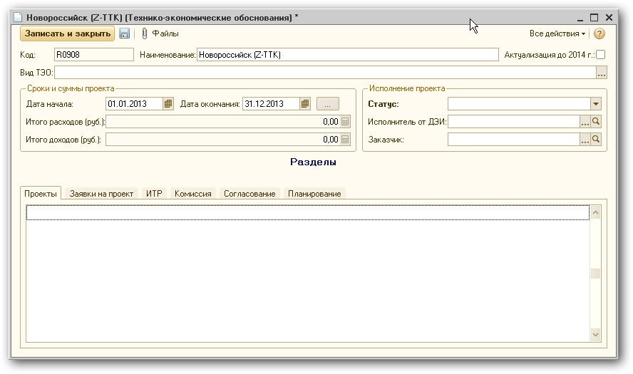
В форме необходимо заполнить все основные реквизиты.
Наименование – наименование ТЭО.
Вид ТЭО – выбор значения из списка:
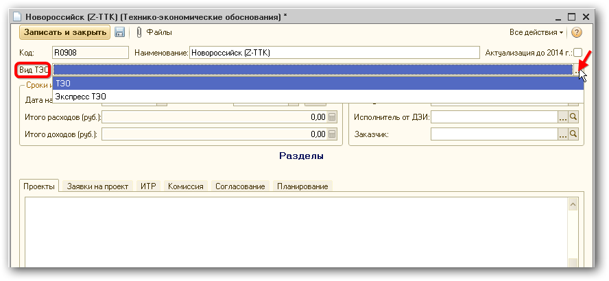
В случае, если новое ТЭО это актуализируемое ТЭО прошлого периода, то необходимо проставить соответствующую отметку:
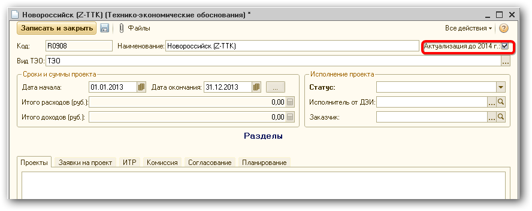
Далее необходимо задать Сроки и суммы проекта:
· Дата начала и дата окончания - сроки проекта. Задаются как период при нажатии на кнопку .
· Итого расходов (руб.) – рассчитывается автоматически по планированию.
· Итого доходов (руб.) – рассчитывается автоматически по планированию.
Пример представлен на следующем рисунке:
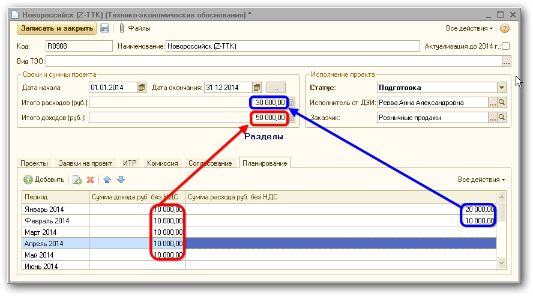
Планирование доходов и расходов осуществляется в рамках периода, установленного Датой начала и Датой окончания.
Группа реквизитов «Исполнение проекта»:
· Статус для нового ТЭО устанавливается в значение «Подготовка»:
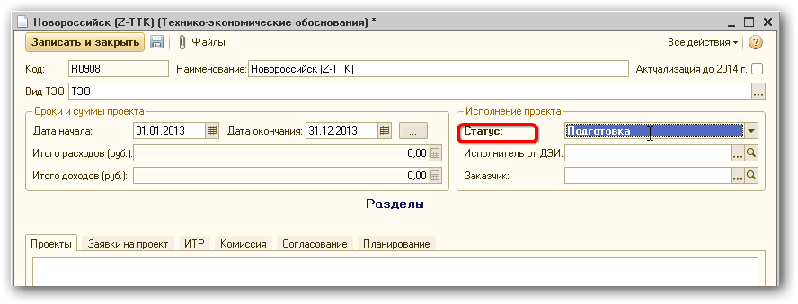
Далее назначается Исполнитель ДЭИ – выбор из справочника Пользователи.
Заказчик – подразделение, заказавшее ТЭО.
К ТЭО можно прикрепить файлы. Для этого необходимо воспользоваться кнопкой 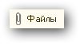.
На закладке «Проекты» автоматически отображаются те проекты, в которых использовалось данное ТЭО.
На закладке «Заявки на проект» автоматически отражаются те документы Заявка на проект, в которых использовано данное ТЭО.
На закладке «ИТР» ведется список ИТР, связанных с данным ТЭО.
На закладке «Комиссия» необходимо заполнить состав комиссии по данному ТЭО.
Для этого надо выбрать комиссию из списка возможных комиссий:
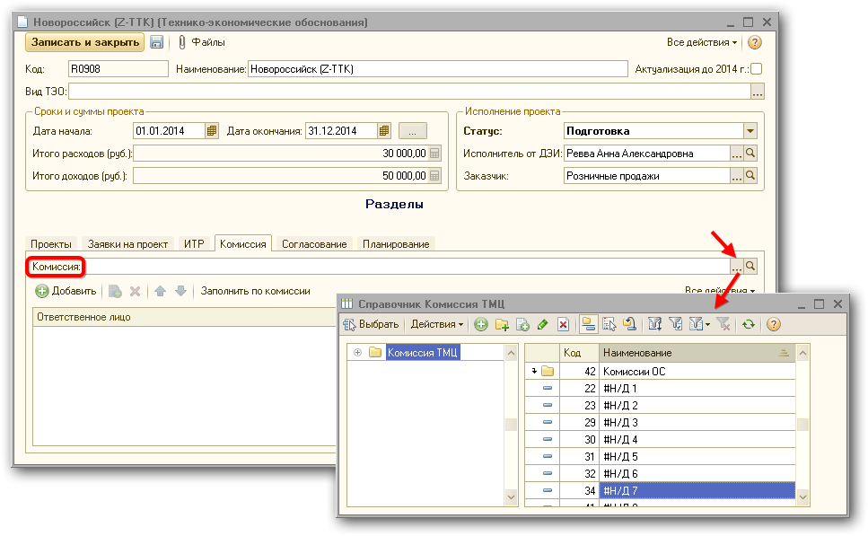
Далее нажать кнопку :
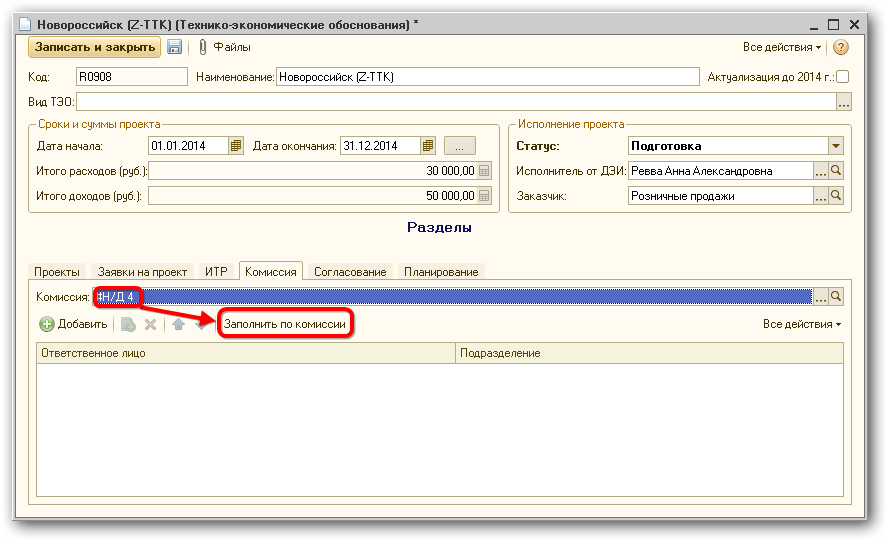
Табличная часть «Комиссия» заполниться списком участников из выбранной комиссии.
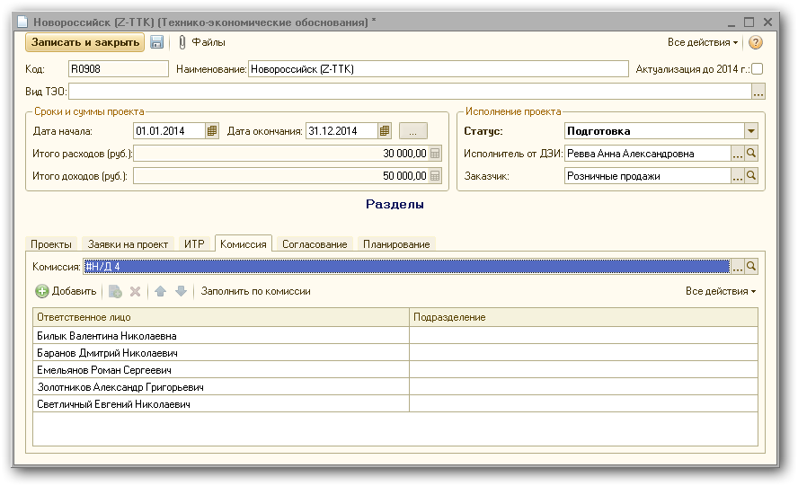
Можно отредактировать итоговый список участников: удалить кого-то из участников или добавив нового.
Для того чтобы подразделение участника автоматически заполнялось, участник должен быть закреплен за этим подразделением.
После того, как все необходимые данные заполнены, ТЭО должен пройти цепочку согласования. Цепочка согласования зависит от выбранного вида ТЭО и отметки «Актуализация до 2014г.»
|
Вид ТЭО = ТЭО |
Вид ТЭО = Экспресс ТЭО |
|
Подготовка |
Подготовка |
|
Разработка ИТР/ТЭО |
|
|
Согласование ИК |
Согласование ИК |
|
Разработка ИТР ДП |
|
|
Согласован |
Согласован |
|
Отказ |
Отказ |
На закладке «Согласование» отображается история согласования данного ТЭО.
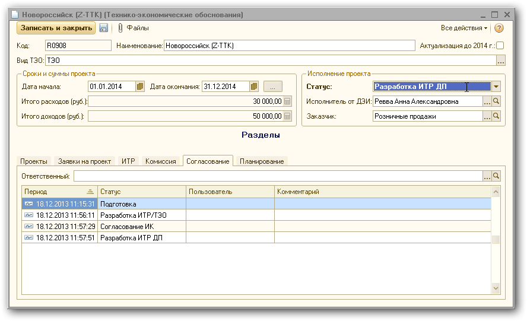
Для того чтобы запустить ТЭО по виду «ТЭО» на согласование, необходимо указать новый статус «Разработка ИТР/ТЭО» и записать ТЭО.
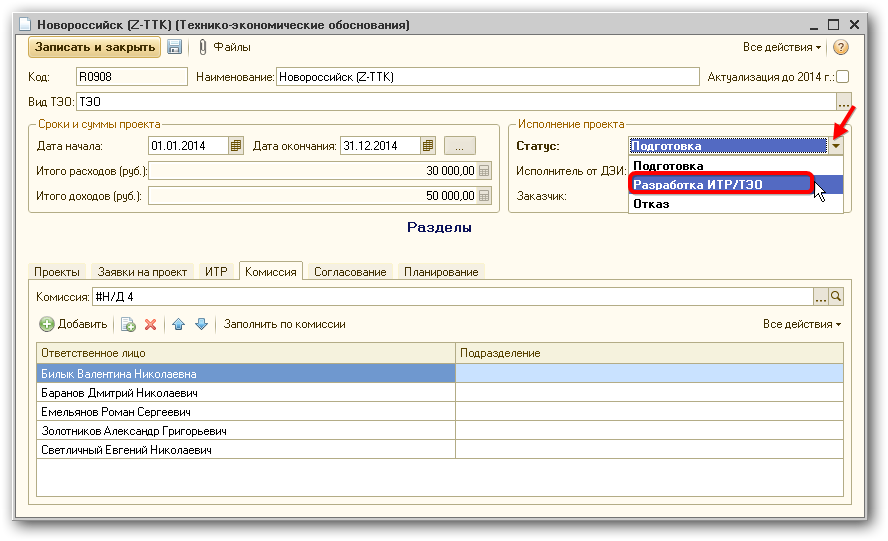
Для того чтобы запустить ТЭО с видом «Экспресс ТЭО» на согласование, необходимо указать новый статус «Согласование ИК» и записать ТЭО.